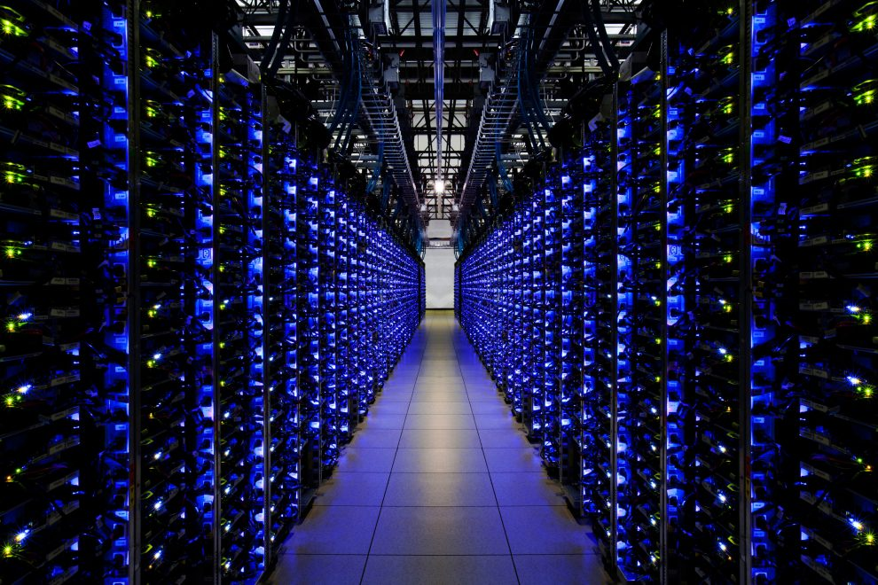

El negocio de proveer servicios de datos es mucho más complejo que la forma en la que se dan los tradicionales servicios, los primeros requieren de nuevos conocimientos y modelos de negocio, que con frecuencia se termina involucrando o necesitando la colaboración de terceras empresas. Por lo que se hace necesario que los operadores tradicionales transformen su negocio para ofrecer los servicios de datos con los niveles de servicio que el mercado exige.
3.3.1 Negocios.
Definitivamente, la tecnología en general ha sido la causa principal y la acción más directa para la transformación del trabajo de las organizaciones en la posguerra del siglo XX. Tanto los bienes de capital "duros" (computadores, teléfonos, videos, facsímiles, grabadoras, etc.), como los programas y sistemas de información y comunicación en general, han incrementado enormemente la productividad y eficiencia de las organizaciones. Tenemos como ejemplos los siguientes: bases de datos en redes de todo orden y topología, sistemas de reservaciones en aerolíneas, sistemas de contabilidad y nóminas, archivos clínicos en centros de salud, sistemas de conmutación electrónica y un sin número de otras aplicaciones a procesos administrativos.
3.3.2 Industria.
La industrialización de los servicios de tecnología de información va a redefinir el mercado en términos de como las organizaciones evalúan, compran y seleccionan los servicios y como los vendedores desarrollan y establecen precios de los servicios.
Para lograr esta estandarización, se requiere un enfoque hacia las soluciones genéricas y esto debe ser responsabilidad de los proveedores, que deben de desarrollar, operar y administrar el resultado de estos genéricos de TI.
Aunque los servicios de TI están en proceso de madurez, la madurez de la industria se ha incrementado en aspectos evidentes, como la forma en que los servicios son implementados y administrados.
3.3.3 Comercio Electrónico. .
El desarrollo de estas tecnologías y de las telecomunicaciones ha hecho que los intercambios de datos crezcan a niveles extraordinarios, simplificándose cada vez más y creando nuevas formas de comercio, y en este marco se desarrolla el Comercio Electrónico.
Se considera “Comercio Electrónico” al conjunto de aquellas transacciones comerciales y financieras realizadas a través del procesamiento y la transmisión de información, incluyendo texto, sonido e imagen.